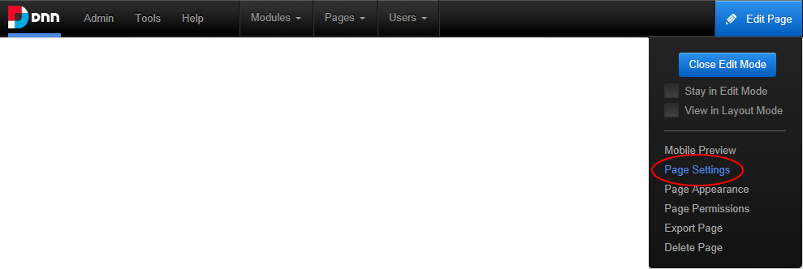

Editing Page Settings
How to edit the settings of the current page via the Control Panel
- Go to the required page. See "Viewing Any Page"
- Hover over the Edit Page and then select Page Settings.

- Edit page settings as required. See "Page Details Settings for Existing Pages" and See "Advanced Settings for Existing Pages"
- Click the Update Page button.